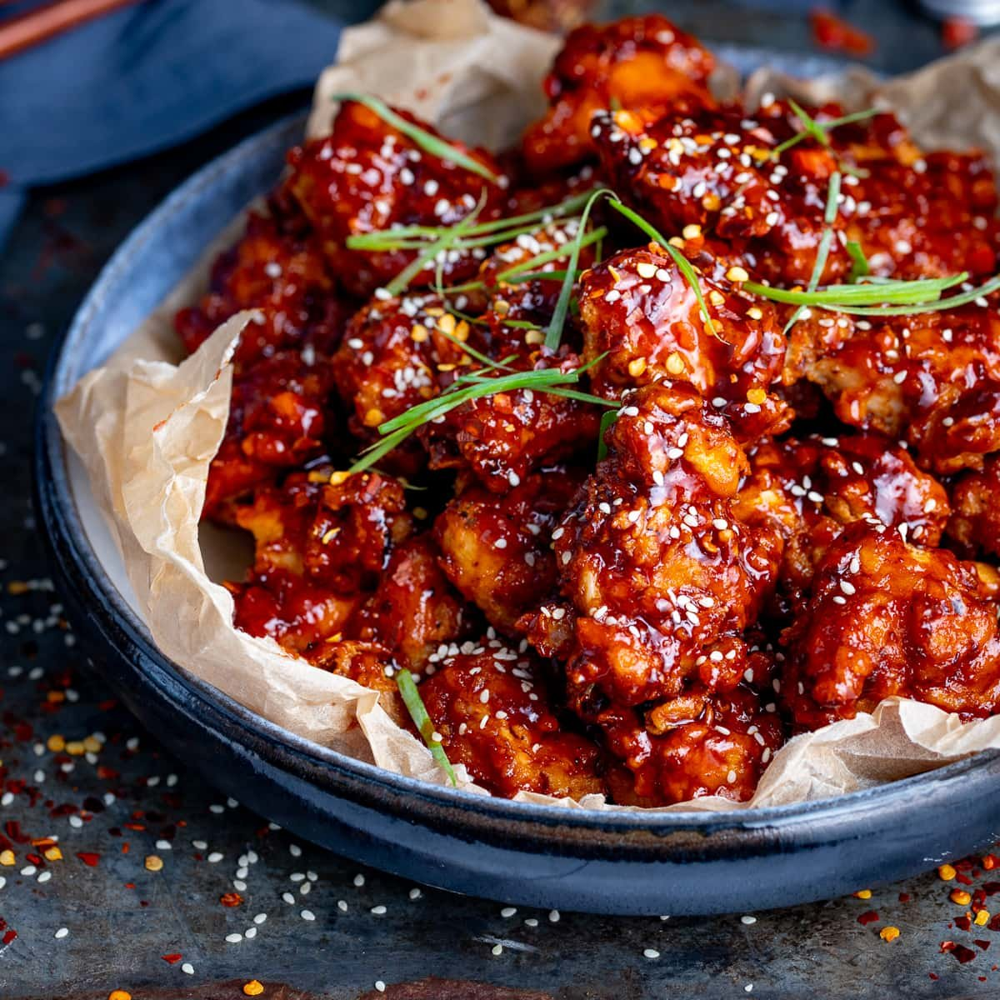

Korean Chicken Recipe
Home

Ingredients
- chicken Thighs 500g
- gochujang paste
- honey
- soy sauce
- garlic powder
- smoked paprika
- onion powder
- salt
- pepper
- flour
- sesame seeds
Steps:
- Dice chicken thighs into cubes
- mix garlic powder, smoked paprika, onion power, salt and pepper, and flour into a large bowl
- add diced chicken to the bowl and mix until thoroughly coated
- fry chicken in a deep fat frier or pan until golden brown
- mix a tbsp of gochujang paste and honey, and 2 tbsp soy sauce in a frying pan
- add the chicken to the mixture and cook on low heat until the chicken is thoroughly coated
- add sesame seeds and serve